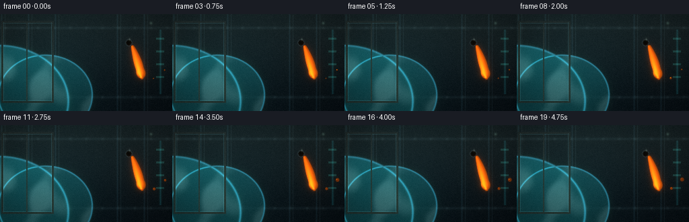
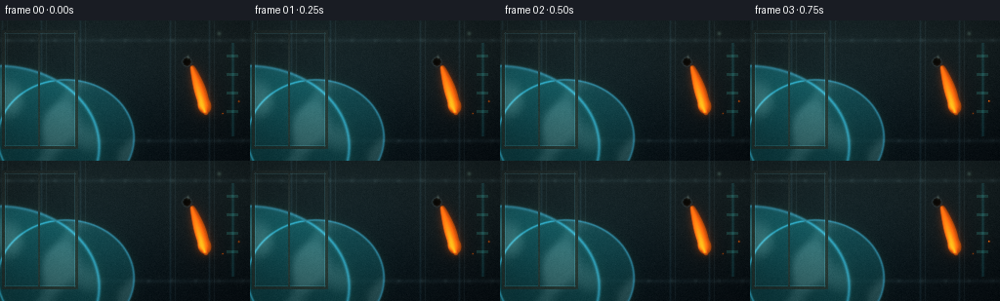
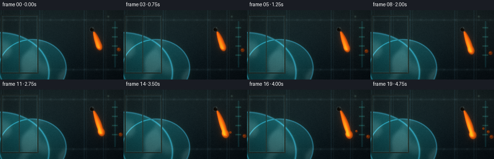
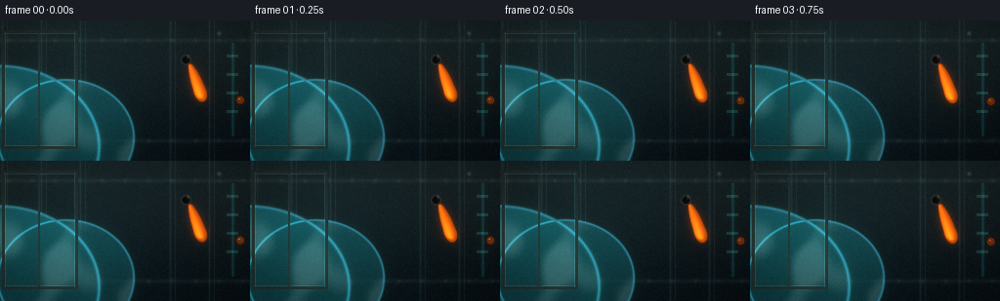

CODING AGENTS AS PIXEL WORLD MODELS
traex/DeepSeek-V4.1-Flash · phygen_004
点击播放 · 原生 RGB 像素
逐轮保存的候选
回放视频、检查图与代码变化。
每份候选均可单独播放。实际图片检查记录在下方工具轨迹中。
候选 01播放与检查图
点击播放 · 原生 RGB 像素


展开代码变化
--- 上一保存版本
+++ 本次保存版本
@@ -0,0 +1,237 @@
+"""Generate a zero-gravity honey release inside a space station."""
+
+from pathlib import Path
+
+import cv2
+import numpy as np
+from PIL import Image, ImageDraw, ImageFilter
+
+from artifact_io import save
+
+
+W, H, N, FPS = 256, 144, 20, 4.0
+CASE = Path(__file__).resolve().parent
+RNG = np.random.default_rng(14)
+
+
+def f32(a):
+ return np.asarray(a, dtype=np.float32)
+
+
+def smoothstep(a, b, x):
+ t = np.clip((x - a) / (b - a), 0.0, 1.0)
+ return t * t * (3.0 - 2.0 * t)
+
+
+def radial_field(cx, cy, sx, sy):
+ yy, xx = np.mgrid[:H, :W].astype(np.float32)
+ return ((xx - cx) / sx) ** 2 + ((yy - cy) / sy) ** 2
+
+
+def make_background():
+ """A quiet observation deck: dark panels, ribs, Earth, and window light."""
+ yy, xx = np.mgrid[:H, :W].astype(np.float32)
+ img = np.zeros((H, W, 3), np.float32)
+
+ # Cool metal wall with a gentle overhead wash.
+ top = f32((17, 26, 31))
+ bottom = f32((7, 13, 18))
+ v = smoothstep(0, H - 1, yy)[..., None]
+ img[:] = top * (1 - v) + bottom * v
+
+ # Wide vertical panels behind the subject.
+ for x0 in (2, 42, 82, 174, 214):
+ seam = np.exp(-((xx - x0) / 1.1) ** 2)
+ img += seam[..., None] * f32((8, 14, 17))
+ for x0 in (7, 47, 87, 179, 219):
+ highlight = np.exp(-((xx - x0) / 0.65) ** 2)
+ img += highlight[..., None] * f32((8, 11, 12))
+
+ # Horizontal structural bands and rivets.
+ for y0 in (20, 123):
+ band = np.exp(-((yy - y0) / 2.0) ** 2)
+ img += band[..., None] * f32((7, 10, 11))
+ for x0 in range(8, W, 24):
+ d = (xx - x0) ** 2 + (yy - y0) ** 2
+ dot = np.exp(-d / 4.0)
+ img += dot[..., None] * f32((9, 11, 11))
+
+ # Earth's blue limb seen through the left window.
+ earth = np.zeros((H, W), np.float32)
+ glow = np.zeros((H, W), np.float32)
+ for cx, cy, rx, ry, strength in (
+ (-2, 129, 102, 82, 1.0),
+ (67, 120, 69, 59, 0.72),
+ ):
+ d = ((xx - cx) / rx) ** 2 + ((yy - cy) / ry) ** 2
+ earth = np.maximum(earth, strength * smoothstep(1.03, 0.96, d))
+ glow = np.maximum(glow, np.exp(-((d - 1.02) / 0.035) ** 2))
+ cloud = (
+ 0.42
+ + 0.25 * np.sin(xx * 0.071 + yy * 0.029)
+ + 0.20 * np.sin(xx * 0.039 - yy * 0.082 + 1.7)
+ + 0.13 * np.cos(xx * 0.135 + yy * 0.047)
+ )
+ cloud = smoothstep(0.33, 0.74, cloud)
+ earth_col = f32((15, 70, 86)) * (0.66 + 0.34 * smoothstep(140, 35, yy)[..., None])
+ earth_col += cloud[..., None] * f32((29, 32, 34))
+ img = img * (1 - earth[..., None] * 0.92) + earth_col * earth[..., None] * 0.92
+ img += glow[..., None] * f32((26, 86, 108))
+
+ # Window frame, with dark glass and a narrow cyan edge.
+ win_l, win_r, win_t, win_b = 5, 76, 13, 128
+ inside = (xx >= win_l) & (xx <= win_r) & (yy >= win_t) & (yy <= win_b)
+ frame = ((xx >= win_l - 3) & (xx <= win_r + 3) & (yy >= win_t - 3) & (yy <= win_b + 3)) & ~inside
+ img[frame] = f32((24, 31, 34))
+ edge = (
+ ((np.abs(xx - win_l) <= 0.7) | (np.abs(xx - win_r) <= 0.7)
+ | (np.abs(yy - win_t) <= 0.7) | (np.abs(yy - win_b) <= 0.7))
+ & (xx >= win_l - 1) & (xx <= win_r + 1)
+ & (yy >= win_t - 1) & (yy <= win_b + 1)
+ )
+ img[edge] += f32((14, 26, 28))
+ # Window mullion.
+ img[(xx >= 39) & (xx <= 40) & inside] = f32((28, 36, 39))
+
+ # A cyan instrument strip on the right keeps the composition asymmetric.
+ strip_x = 238
+ strip = np.exp(-((xx - strip_x) / 1.4) ** 2) * (yy > 22) * (yy < 119)
+ img += strip[..., None] * f32((7, 32, 35))
+ for y0 in (35, 54, 73, 92):
+ rect = (xx >= 232) & (xx <= 243) & (yy >= y0) & (yy <= y0 + 2)
+ img[rect] += f32((12, 36, 33))
+
+ # Soft light spill from the window and a top-right practical.
+ window_spill = np.exp(-(((xx - 76) / 96) ** 2 + ((yy - 83) / 100) ** 2))
+ img += window_spill[..., None] * f32((3, 8, 10))
+ practical = np.exp(-(((xx - 224) / 2.0) ** 2 + ((yy - 13) / 2.0) ** 2))
+ img += practical[..., None] * f32((33, 44, 38))
+
+ # Subtle sensor grain baked into the plate.
+ noise = RNG.normal(0, 1.7, (H, W, 1)).astype(np.float32)
+ img += noise
+ return np.clip(img, 0, 255)
+
+
+def ribbon_center(t, s):
+ """Centerline of the extruded honey strand in image coordinates."""
+ # s is 0 at the nozzle and 1 at the free end.
+ x = 196.0 + 21.0 * s - 7.0 * s * s + 1.2 * np.sin(2.4 * s + 0.5)
+ y = 48.0 + 55.0 * s - 8.0 * s * s + 2.4 * np.sin(3.6 * s - t * 0.45)
+ x += t * (0.55 * s - 0.12)
+ y += t * (0.22 * s * s)
+ return x, y
+
+
+def draw_honey(img, t):
+ """Composite a tapered, translucent strand and its orbiting droplets."""
+ yy, xx = np.mgrid[:H, :W].astype(np.float32)
+ core = np.zeros((H, W), np.float32)
+ rim = np.zeros((H, W), np.float32)
+ spec = np.zeros((H, W), np.float32)
+
+ # Main extruded ribbon. It is deliberately smooth, not a chain of circles.
+ count = 145
+ for i in range(count):
+ s = i / (count - 1)
+ cx, cy = ribbon_center(t, s)
+ # It narrows from the nozzle, swells midair, and has a hanging bulb.
+ width = 2.2 + 3.0 * np.sin(np.pi * np.clip(s * 1.08, 0, 1)) ** 0.7
+ width += 2.4 * np.exp(-((s - 0.82) / 0.12) ** 2)
+ width *= 0.82 + 0.18 * np.sin(np.pi * s)
+ d2 = (xx - cx) ** 2 + (yy - cy) ** 2
+ body = np.exp(-d2 / (width * width))
+ core = np.maximum(core, body)
+ rim = np.maximum(rim, np.exp(-((np.sqrt(d2) - width * 1.1) / 0.75) ** 2))
+ # A moving glint travels down the viscous surface.
+ glint = np.exp(-(((xx - cx + 0.6 * width) / (0.75 * width)) ** 2
+ + ((yy - cy + 0.35 * width) / (0.50 * width)) ** 2))
+ spec = np.maximum(spec, glint * (0.35 + 0.65 * smoothstep(0.05, 0.9, s)))
+
+ # Droplets released from the end, each with a tiny highlight.
+ droplets = [
+ (0.25, 0.35, 1.8, 0.20),
+ (0.63, 0.85, 2.5, 0.42),
+ (0.87, 1.28, 3.0, 0.66),
+ ]
+ for phase, dist, radius, delay in droplets:
+ growth = smoothstep(delay, delay + 0.35, t)
+ cx = 216.0 + dist * 31.0 + 3.0 * np.sin(phase + t * 0.7)
+ cy = 98.0 - dist * 22.0 + 5.0 * np.cos(phase * 1.3 + t * 0.55)
+ r = radius * (0.35 + 0.65 * growth)
+ d = np.sqrt((xx - cx) ** 2 + (yy - cy) ** 2)
+ body = np.exp(-(d / r) ** 4)
+ core = np.maximum(core, body)
+ rim = np.maximum(rim, np.exp(-((d - r) / 0.65) ** 2) * 0.72)
+ spec = np.maximum(spec, np.exp(-(((xx - cx + r * 0.32) / (r * 0.22)) ** 2
+ + ((yy - cy + r * 0.36) / (r * 0.15)) ** 2)))
+
+ # The nozzle / release tip, mostly in shadow so the honey reads as emerging.
+ nozzle_d = np.sqrt((xx - 191.0) ** 2 + (yy - 42.0) ** 2)
+ nozzle = (nozzle_d < 4.3).astype(np.float32)
+ collar = np.exp(-((nozzle_d - 4.4) / 1.0) ** 2)
+ img *= 1 - nozzle[..., None] * 0.92
+ img += collar[..., None] * f32((18, 22, 23))
+ img += np.exp(-(((xx - 192.0) / 1.2) ** 2 + ((yy - 37.0) / 2.0) ** 2))[..., None] * f32((38, 42, 37))
+
+ # Honey optics: deep amber body, bright edge, warm internal scattering.
+ amber = f32((105, 38, 7))
+ amber_hi = f32((224, 105, 18))
+ edge = np.clip(rim * 0.75 + core * 0.12, 0, 1)
+ alpha = np.clip(core * 0.94 + rim * 0.58, 0, 1)
+ honey = amber[None, None, :] * (0.60 + 0.40 * core[..., None])
+ honey += edge[..., None] * f32((75, 38, 4))
+ honey += spec[..., None] * amber_hi
+ honey += np.exp(-(((xx - 204) / 42) ** 2 + ((yy - 75) / 48) ** 2))[..., None] * f32((9, 4, 1))
+ img = img * (1 - alpha[..., None]) + honey * alpha[..., None]
+ return np.clip(img, 0, 255)
+
+
+def add_light_and_finish(img, t):
+ """Add a restrained glow, lens response, and temporal texture."""
+ base = img.astype(np.float32)
+ # Blur the warm pixels only, preserving the cool station palette.
+ warm = np.clip(base - f32((8, 8, 4)), 0, None)
+ warm *= f32((1.0, 0.60, 0.18))
+ glow = cv2.GaussianBlur(warm, (0, 0), 3.8)
+ wide = cv2.GaussianBlur(warm, (0, 0), 11.0)
+ base += glow * 0.34 + wide * 0.14
+
+ # Very soft window bloom.
+ blue = np.clip(base - f32((8, 14, 18)), 0, None) * f32((0.25, 0.70, 1.0))
+ base += cv2.GaussianBlur(blue, (0, 0), 5.0) * 0.08
+
+ # Slight warm spill across the subject side.
+ yy, xx = np.mgrid[:H, :W].astype(np.float32)
+ spill = np.exp(-(((xx - 211) / 38) ** 2 + ((yy - 78) / 56) ** 2))
+ base += spill[..., None] * f32((2.0, 0.8, 0.2))
+
+ # Gentle vignette.
+ vig = np.clip(1.0 - 0.20 * (((xx - W / 2) / (W * 0.62)) ** 2
+ + ((yy - H / 2) / (H * 0.72)) ** 2), 0.70, 1.0)
+ base *= vig[..., None]
+
+ # Fixed per-frame grain makes the 4 fps sampling feel photographic.
+ grain = RNG.normal(0, 1.15, (H, W, 1)).astype(np.float32)
+ base += grain
+ return np.clip(base, 0, 255).astype(np.uint8)
+
+
+def generate_frames():
+ bg = make_background()
+ frames = []
+ for i in range(N):
+ t = i / (N - 1)
+ frame = draw_honey(bg.copy(), t)
+ frames.append(add_light_and_finish(frame, t))
+ return np.stack(frames)
+
+
+def main():
+ frames = generate_frames()
+ save(frames, CASE)
+ print(f"saved {frames.shape} RGB frames to {CASE}")
+
+
+if __name__ == "__main__":
+ main()
候选 02播放与检查图
点击播放 · 原生 RGB 像素


展开代码变化
--- 上一保存版本
+++ 本次保存版本
@@ -116,10 +116,10 @@
def ribbon_center(t, s):
"""Centerline of the extruded honey strand in image coordinates."""
# s is 0 at the nozzle and 1 at the free end.
- x = 196.0 + 21.0 * s - 7.0 * s * s + 1.2 * np.sin(2.4 * s + 0.5)
- y = 48.0 + 55.0 * s - 8.0 * s * s + 2.4 * np.sin(3.6 * s - t * 0.45)
- x += t * (0.55 * s - 0.12)
- y += t * (0.22 * s * s)
+ x = 194.0 + 24.0 * s - 7.0 * s * s + 1.1 * np.sin(2.4 * s + 0.5)
+ y = 46.0 + 58.0 * s - 8.0 * s * s + 2.2 * np.sin(3.6 * s - t * 0.7)
+ x += t * (1.5 * s - 0.12)
+ y += t * (1.1 * s * s)
return x, y
@@ -131,13 +131,17 @@
spec = np.zeros((H, W), np.float32)
# Main extruded ribbon. It is deliberately smooth, not a chain of circles.
+ # The strand is already flowing, but its free end continues to extend.
+ strand_end = 0.58 + 0.40 * smoothstep(0.0, 0.92, t)
count = 145
for i in range(count):
- s = i / (count - 1)
+ s = (i / (count - 1)) * strand_end
cx, cy = ribbon_center(t, s)
# It narrows from the nozzle, swells midair, and has a hanging bulb.
- width = 2.2 + 3.0 * np.sin(np.pi * np.clip(s * 1.08, 0, 1)) ** 0.7
- width += 2.4 * np.exp(-((s - 0.82) / 0.12) ** 2)
+ width = 2.0 + 2.9 * np.sin(np.pi * np.clip(s / strand_end, 0, 1)) ** 0.7
+ width += (1.7 + 2.5 * smoothstep(0.08, 0.92, t)) * np.exp(
+ -((s - strand_end + 0.06) / 0.12) ** 2
+ )
width *= 0.82 + 0.18 * np.sin(np.pi * s)
d2 = (xx - cx) ** 2 + (yy - cy) ** 2
body = np.exp(-d2 / (width * width))
@@ -149,16 +153,19 @@
spec = np.maximum(spec, glint * (0.35 + 0.65 * smoothstep(0.05, 0.9, s)))
# Droplets released from the end, each with a tiny highlight.
+ # Three pearls pinch off at staggered times and coast away from the bulb.
droplets = [
- (0.25, 0.35, 1.8, 0.20),
- (0.63, 0.85, 2.5, 0.42),
- (0.87, 1.28, 3.0, 0.66),
+ (0.22, 2.2, 0.55, 20.0, -17.0, 1.1),
+ (0.46, 2.8, 0.85, 30.0, -10.0, 1.6),
+ (0.67, 3.5, 1.10, 37.0, 1.0, 2.1),
]
- for phase, dist, radius, delay in droplets:
- growth = smoothstep(delay, delay + 0.35, t)
- cx = 216.0 + dist * 31.0 + 3.0 * np.sin(phase + t * 0.7)
- cy = 98.0 - dist * 22.0 + 5.0 * np.cos(phase * 1.3 + t * 0.55)
- r = radius * (0.35 + 0.65 * growth)
+ end_x, end_y = ribbon_center(t, strand_end)
+ for phase, radius, delay, vx, vy, wobble in droplets:
+ age = np.clip((t - delay) / (1.0 - delay), 0.0, 1.0)
+ growth = smoothstep(0.0, 0.22, age)
+ cx = end_x + vx * age + wobble * np.sin(phase * 2.0 + t * 1.4)
+ cy = end_y + vy * age + wobble * np.cos(phase * 1.3 + t * 0.9)
+ r = radius * (0.20 + 0.80 * growth)
d = np.sqrt((xx - cx) ** 2 + (yy - cy) ** 2)
body = np.exp(-(d / r) ** 4)
core = np.maximum(core, body)
@@ -167,7 +174,7 @@
+ ((yy - cy + r * 0.36) / (r * 0.15)) ** 2)))
# The nozzle / release tip, mostly in shadow so the honey reads as emerging.
- nozzle_d = np.sqrt((xx - 191.0) ** 2 + (yy - 42.0) ** 2)
+ nozzle_d = np.sqrt((xx - 190.0) ** 2 + (yy - 40.0) ** 2)
nozzle = (nozzle_d < 4.3).astype(np.float32)
collar = np.exp(-((nozzle_d - 4.4) / 1.0) ** 2)
img *= 1 - nozzle[..., None] * 0.92
可观测工具轨迹
实际执行的命令与返回图片。
命令 1exit 0
/bin/bash -c "pwd && rg --files -g 'prompt.txt' -g 'GENERATION_RULES.md' -g 'task_spec.json' -g '"'!**/.git/**'"'"
命令 2exit 0
/bin/bash -c 'ls -la'
命令 3exit 0
/bin/bash -c 'cat prompt.txt'
命令 4exit 0
/bin/bash -c 'cat GENERATION_RULES.md'
命令 5exit 0
/bin/bash -c 'cat task_spec.json'
命令 6exit 0
/bin/bash -c "sed -n '1,240p' artifact_io.py && sed -n '1,260p' player_template.html"
命令 7exit 0
/bin/bash -c "python - <<'PY' import importlib.util mods=['numpy','PIL','scipy','cv2','imageio','moviepy'] for m in mods: print(m, bool(importlib.util.find_spec(m))) PY"
命令 8exit 0
/bin/bash -c 'which ffmpeg || true; fc-list | head -20'
命令 9exit 0
/bin/bash -c "python - <<'PY'
import cv2, numpy as np
from PIL import Image
print('opencv', cv2.__version__)
PY"命令 10exit 0
/bin/bash -c 'python generate.py'
命令 11exit 0
/bin/bash -c 'ls -lh inspection.png frames/00.png frames/19.png pixels.npz index.html'
命令 12exit 0
/bin/bash -c "python - <<'PY' from PIL import Image for p in ['frames/00.png','frames/10.png','frames/19.png','inspection.png']: im=Image.open(p) print(p, im.size, im.getbbox()) PY"
命令 13exit 0
/bin/bash -c "python - <<'PY'
from PIL import Image
import numpy as np
for idx in [0,5,10,15,19]:
a=np.array(Image.open(f'frames/{idx:02d}.png')).astype(float)
warm=(a[:,:,0]>a[:,:,2]*1.6)&(a[:,:,0]>55)
bright=a.mean(2)>40
print(idx,'mean',a.mean((0,1)).round(1),'warm px',warm.sum(),'bright px',bright.sum(),'max',a.max((0,1)).astype(int))
PY"命令 14exit 0
/bin/bash -c 'command -v chafa || command -v viu || command -v jp2 || command -v img2txt || true'
命令 15exit 0
/bin/bash -c "python - <<'PY'
from PIL import Image
import numpy as np
im=np.array(Image.open('frames/10.png'))
# Print a downsampled color-block summary of the right half, using ANSI truecolor.
for y in range(0,144,4):
row=[]
for x in range(128,256,4):
p=im[y:y+4,x:x+4].mean((0,1)).astype(int)
row.append(f'\\x1b[48;2;{p[0]};{p[1]};{p[2]}m ')
print(''.join(row)+'\\x1b[0m')
PY"命令 16exit 0
/bin/bash -c "python - <<'PY'
from PIL import Image
import numpy as np
chars=' .:-=+*#%@'
for idx in [0,10,19]:
a=np.asarray(Image.open(f'frames/{idx:02d}.png').convert('L'),float)
# resample blocks 4x4
a=a.reshape(36,4,64,4).mean((1,3))
a=np.clip((a-3)/90,0,1)
print('\\nFRAME',idx)
for r in a:
print(''.join(chars[min(9,int(v*9.999))] for v in r))
PY"命令 17exit 0
/bin/bash -c "python - <<'PY'
from PIL import Image
import numpy as np
for idx in [0,10,19]:
a=np.array(Image.open(f'frames/{idx:02d}.png'))
# find brightest within honey roi x 170:240 y 30:130
roi=a[30:130,165:245]
flat=roi.reshape(-1,3)
score=flat[:,0].astype(int)-flat[:,2]
ids=np.argsort(score)[-20:]
print(idx, flat[ids][::4])
# avg of warm pixels
warm=flat[(flat[:,0]>70)&(flat[:,0]>flat[:,2]*2)]
print('warm avg',warm.mean(0), 'n',len(warm))
PY"命令 18exit 0
/bin/bash -c "python - <<'PY'
from PIL import Image
import numpy as np
for idx in [0,10,19]:
a=np.array(Image.open(f'frames/{idx:02d}.png')).astype(float)
for name,(x0,x1,y0,y1) in {'window':(5,76,13,128),'honey':(165,245,30,130),'wallR':(100,165,0,144),'walltop':(0,256,0,12)}.items():
r=a[y0:y1,x0:x1].mean((0,1))
print(idx,name,r.round(0))
PY"命令 19exit 0
/bin/bash -c "python - <<'PY'
from PIL import Image
import numpy as np
a=np.asarray(Image.open('frames/10.png'),float)
# use crop upscale to temp, then encode sixel? inspect RGB block distribution
for y in range(30,130,8):
s=''
for x in range(170,242,4):
p=a[y:y+8,x:x+4].mean((0,1))
if p[0]>130: ch='@'
elif p[0]>70: ch='O'
elif p[0]>40 and p[0]>p[2]*1.3: ch='o'
elif p[1]>p[0]*1.2: ch='~'
else: ch='.'
s+=ch
print(f'{y:03d} '+s)
PY"命令 20exit 0
/bin/bash -c 'command -v chromium || command -v chromium-browser || command -v google-chrome || true'
命令 21exit 0
/bin/bash -c "python - <<'PY'
from PIL import Image
import numpy as np
for idx in [0,10,19]:
a=np.array(Image.open(f'frames/{idx:02d}.png'))
# detect vertical honey run at rows 45-100, x 180-230
for y in [48,56,64,72,80,88,96]:
xs=np.where((a[y,:,0]>100)&(a[y,:,0]>a[y,:,2]*1.8))[0]
print(idx,y,(xs.min(),xs.max(),len(xs)) if len(xs) else None)
PY"命令 22exit 0
/bin/bash -c 'python generate.py'
命令 23exit 0
/bin/bash -c "python - <<'PY'
from PIL import Image
import numpy as np
for idx in [0,5,10,15,19]:
a=np.array(Image.open(f'frames/{idx:02d}.png')).astype(float)
warm=(a[:,:,0]>a[:,:,2]*1.6)&(a[:,:,0]>55)
print(idx,'mean',a.mean((0,1)).round(1),'warm px',warm.sum(),'max',a.max((0,1)).astype(int))
PY"命令 24exit 0
/bin/bash -c "python - <<'PY'
from PIL import Image
import numpy as np
chars=' .:-=+*#%@'
for idx in [0,5,10,15,19]:
a=np.asarray(Image.open(f'frames/{idx:02d}.png').convert('L'),float)
a=a.reshape(36,4,64,4).mean((1,3))
a=np.clip((a-3)/90,0,1)
print('\\nFRAME',idx)
for r in a:
print(''.join(chars[min(9,int(v*9.999))] for v in r))
PY"命令 25exit 0
/bin/bash -c "python - <<'PY'
from PIL import Image
import numpy as np
for idx in [0,5,10,15,19]:
a=np.array(Image.open(f'frames/{idx:02d}.png'))
print('\\n',idx)
for y in range(40,121,8):
xs=np.where((a[y,:,0]>85)&(a[y,:,0]>a[y,:,2]*1.7))[0]
if len(xs):
# group contiguous segments
cuts=np.where(np.diff(xs)>1)[0]
groups=np.split(xs,cuts+1)
print(y,[(int(g[0]),int(g[-1])) for g in groups])
PY"命令 26exit 0
/bin/bash -c "python - <<'PY'
from PIL import Image
im=Image.open('frames/19.png')
# Print the right-side crop with a compact pixel-art character map and exact warm segments.
import numpy as np
a=np.array(im)
for y in range(36,120,3):
row=''
for x in range(180,256,2):
p=a[y:y+3,x:x+2].mean((0,1))
if p[0]>160: c='@'
elif p[0]>90: c='O'
elif p[0]>50 and p[0]>p[2]*1.25: c='o'
elif p[1]>p[0]*1.3: c='~'
elif p.mean()>24: c='.'
else: c=' '
row+=c
print(f'{y:03d} {row}')
PY"命令 27exit 1
/bin/bash -c "python - <<'PY'
from pathlib import Path
import json, re
import numpy as np
from PIL import Image
root=Path('.')
spec=json.loads((root/'task_spec.json').read_text())
with np.load(root/'pixels.npz') as z:
packed=z['pixels']
assert packed.shape == (spec['height'], spec['width'], spec['frames'])
frames=np.stack([
np.stack([(packed[:,:,i]>>16)&255,(packed[:,:,i]>>8)&255,packed[:,:,i]&255],axis=2)
for i in range(spec['frames'])
])
assert frames.dtype == np.uint8
pngs=[np.asarray(Image.open(root/'frames'/f'{i:02d}.png')) for i in range(spec['frames'])]
assert all(np.array_equal(a,b) for a,b in zip(frames,pngs))
changed=[int(np.count_nonzero(frames[i]"'!=frames[i-1])) for i in range(1,len(frames))]
assert all(x>0 for x in changed)
html=(root/'"'index.html').read_text()
assert '__DATA__' not in html and '__ID__' not in html and 'window.__pixelReady' in html
print('shape:',frames.shape,'dtype:',frames.dtype)
print('changed pixels/frame:',changed)
print('frame mean luminance:',[round(float(f.mean()),2) for f in frames[::5]])
print('index size MB:',round((root/'index.html').stat().st_size/1024/1024,2))
PY"命令 28exit 0
/bin/bash -c "python - <<'PY'
from pathlib import Path
import json
import numpy as np
from PIL import Image
root=Path('.')
spec=json.loads((root/'task_spec.json').read_text())
with np.load(root/'pixels.npz') as z:
packed=z['pixels']
print('packed',packed.shape,packed.dtype,spec)
frames=np.stack([np.stack([(packed[:,:,i]>>16)&255,(packed[:,:,i]>>8)&255,packed[:,:,i]&255],axis=2) for i in range(spec['frames'])])
print('frames',frames.shape,frames.dtype)
for i in range(spec['frames']):
a=np.asarray(Image.open(root/'frames'/f'{i:02d}.png'))
eq=np.array_equal(frames[i],a)
if not eq: print('mismatch',i,a.shape,np.max(np.abs(frames[i].astype(int)-a.astype(int))))
print('changed',[int(np.count_nonzero(frames[i]"'!=frames[i-1])) for i in range(1,len(frames))])
PY'命令 29exit 0
/bin/bash -c 'python -m py_compile generate.py'
命令 30exit 0
/bin/bash -c "python - <<'PY'
from pathlib import Path
import json
import numpy as np
from PIL import Image
root=Path('.')
spec=json.loads((root/'task_spec.json').read_text())
with np.load(root/'pixels.npz') as z:
packed=z['pixels']
assert packed.shape == (spec['height'], spec['width'], spec['frames'])
frames=np.stack([
np.stack([(packed[:,:,i]>>16)&255,(packed[:,:,i]>>8)&255,packed[:,:,i]&255],axis=2)
for i in range(spec['frames'])
]).astype(np.uint8)
pngs=[np.asarray(Image.open(root/'frames'/f'{i:02d}.png')) for i in range(spec['frames'])]
assert all(np.array_equal(a,b) for a,b in zip(frames,pngs))
changed=[int(np.count_nonzero(frames[i]"'!=frames[i-1])) for i in range(1,len(frames))]
assert all(x>0 for x in changed)
html=(root/'"'index.html').read_text()
assert '__DATA__' not in html and '__ID__' not in html and 'window.__pixelReady' in html
print('shape:',frames.shape,'dtype:',frames.dtype)
print('changed pixels/frame:',changed)
print('frame mean luminance:',[round(float(f.mean()),2) for f in frames[::5]])
print('index size MB:',round((root/'index.html').stat().st_size/1024/1024,2))
PY"命令 31exit 0
/bin/bash -c "git status --short 2>/dev/null || true; find . -maxdepth 2 -type f -printf '%p %s bytes\\n' | sort"
保存候选 2 份；完成命令 31 次；可验证图片返回 0 张。原始 API 响应与完整日志保留在本地。